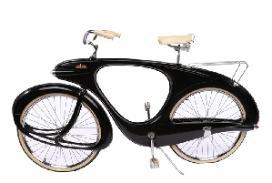

Established 1926
In the heart of Stratford-upon-Avon, Pashley Cycles stands as Britain's longest established manufacturer of hand-built bicycles. Each Pashley bicycle is a testament to nearly a century of British craftsmanship and design excellence.
William 'Rath' Pashley founded Pashley Cycles in Birmingham. The company began producing delivery bicycles for industrial use.
During WWII, Pashley contributed to the war effort, producing military bicycles and carrier cycles for factories and the postal service.
Introduction of the iconic Pashley Princess, which would become one of Britain's best-loved bicycle designs.
Still producing hand-built bicycles in Stratford-upon-Avon, combining traditional methods with modern technologies.